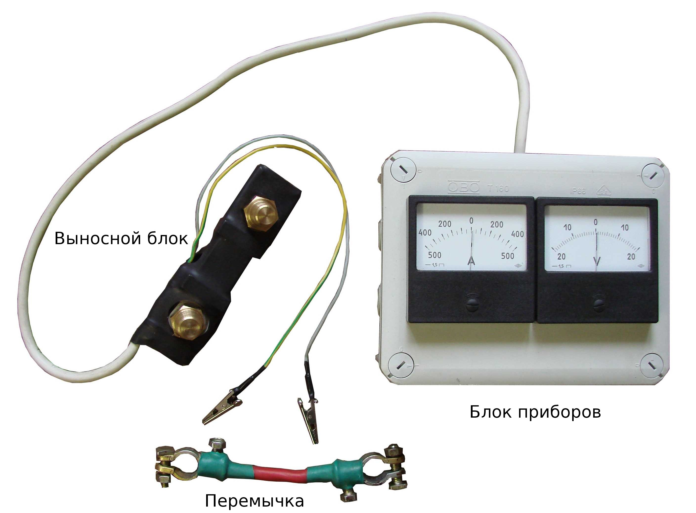
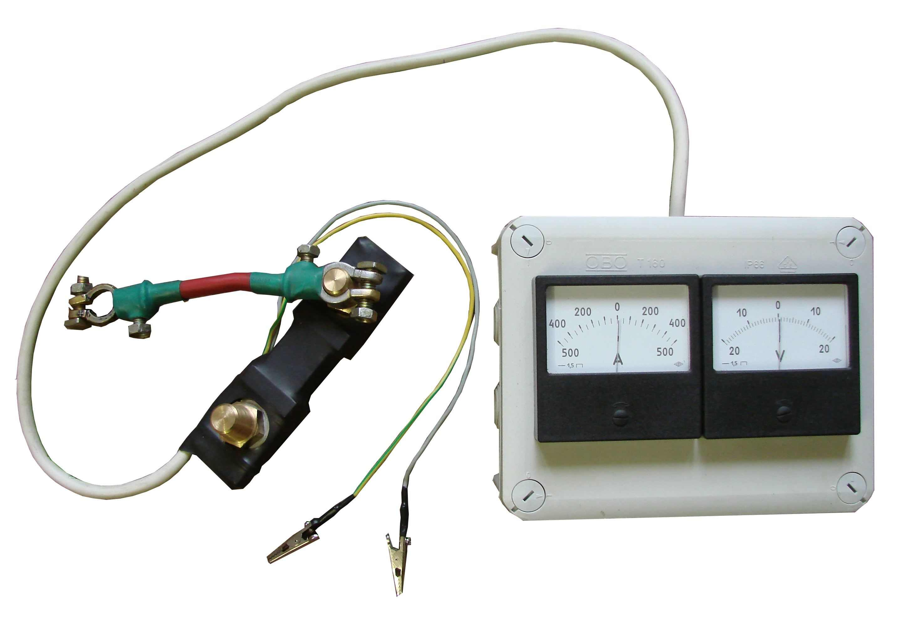
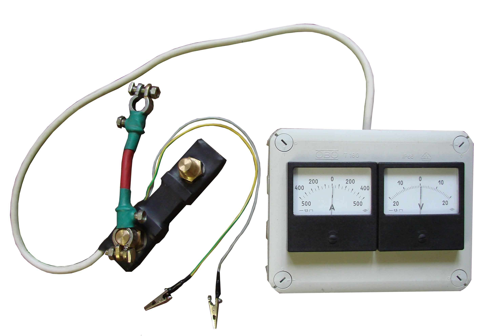
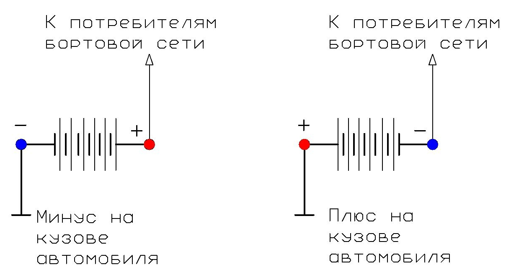
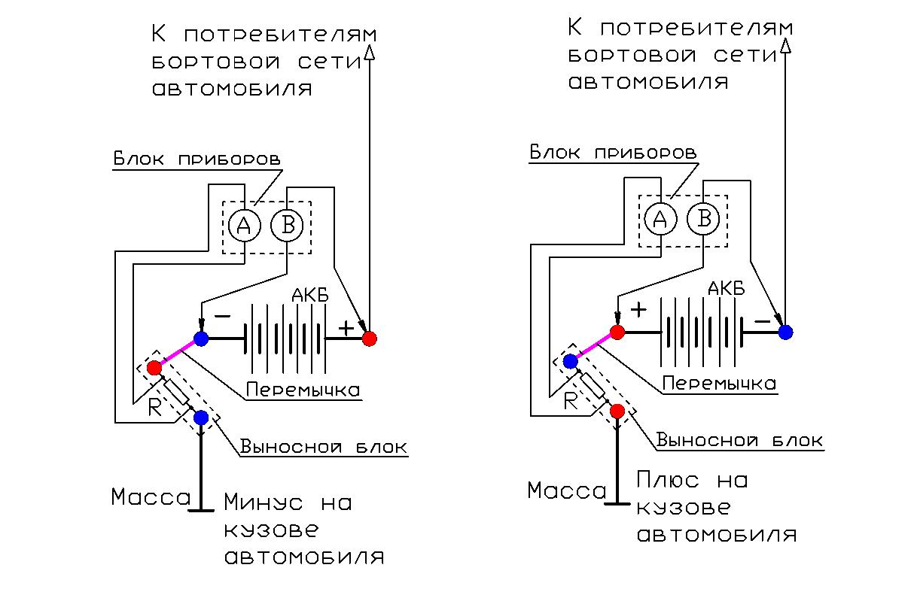
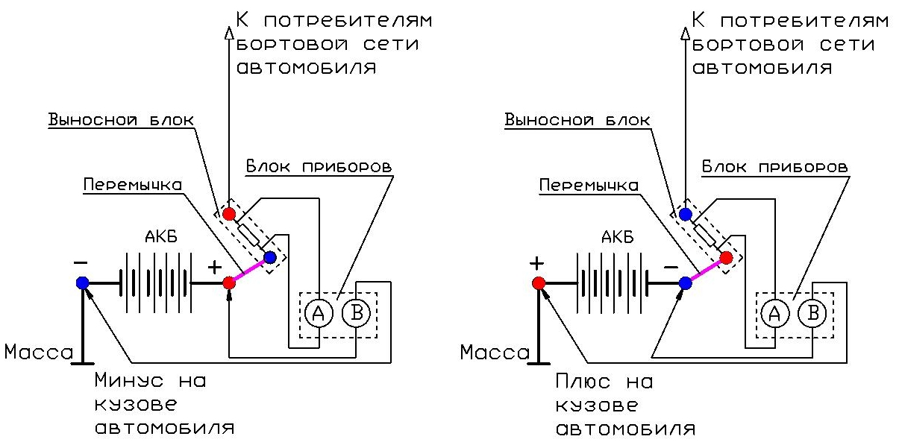
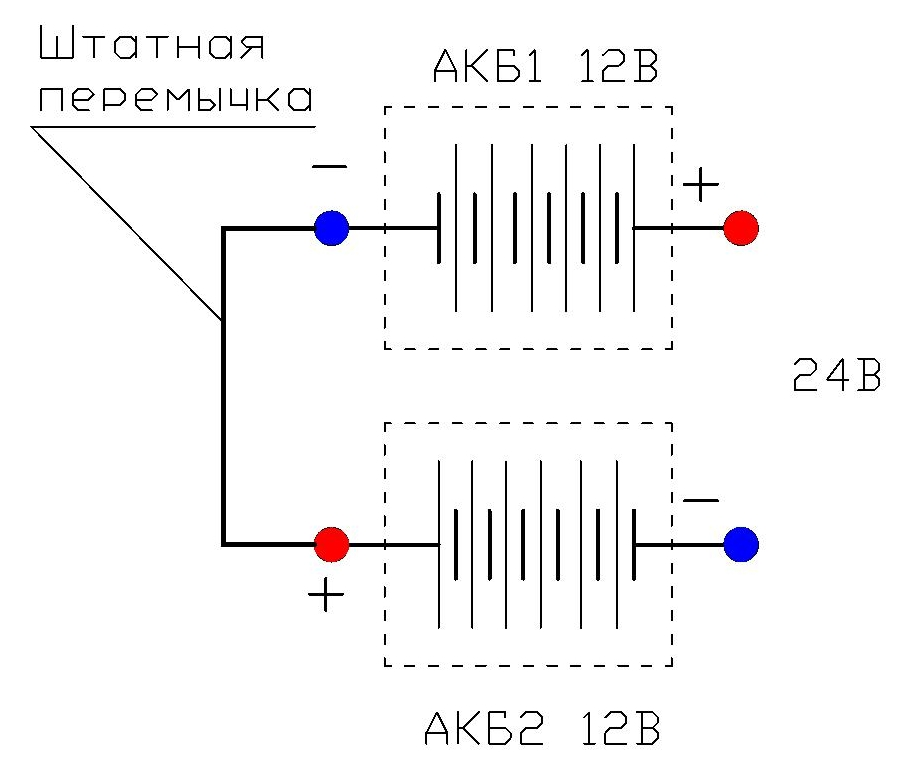
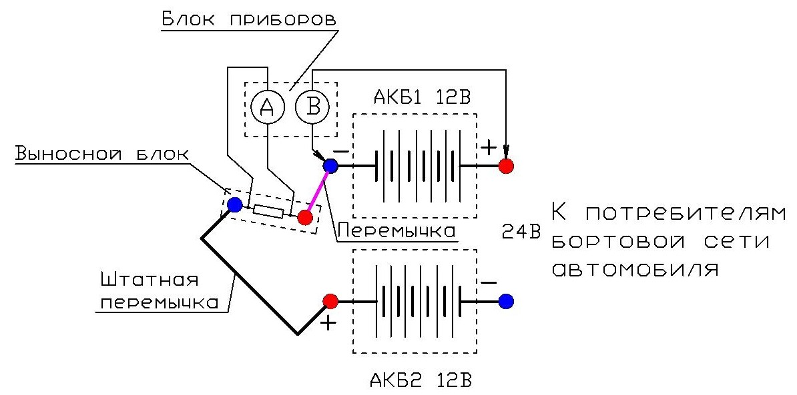
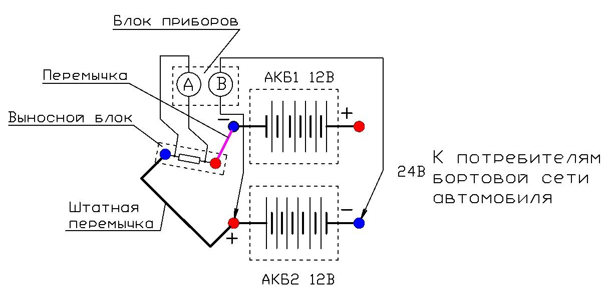

Для перехода щелкните по ссылке на желтом фоне:
Тестер силового электрооборудования автомобиля АСГ (Аккумулятор-Стартер-Генератор)
НАЗНАЧЕНИЕ
Тестер электрооборудования автомобиля АСГ предназначен для проверки работоспособности автомобильных устройств -
Аккумулятор - Стартер - Генератор при включении потребителей, при запуске и последующей работе автомобильного двигателя.
Тестером можно производить проверку электрооборудования:
- автомобилей у которых отрицательный полюс (минус) аккумуляторной батареи соединен с кузовом;
- автомобилей у которых положительный полюс (плюс) аккумуляторной батареи соединен с кузовом.
Проверяемые параметры бортовой сети автомобиля:
1. Напряжение (э.д.с.) аккумуляторной батареи при неработающем
двигателе и отключенных потребителях (степень заряда и состояние
аккумуляторной батареи);
2. Напряжение и величину тока (в пределах цены деления амперметра
тестера), отдаваемого аккумуляторной батареей потребителям (фары,
автономное отопление, и т. п.) при
неработающем двигателе (состояние потребителей, наличие коротких
замыканий в проводке).;
3. Ток потребляемый стартером при запуске двигателя (состояние
стартера, состояние двигателя, состояние аккумуляторной батареи);
4. Напряжение аккумуляторной батареи под нагрузкой током стартера при
запуске двигателя (состояние стартера, двигателя, состояние
аккумуляторной батареи);
5. Напряжение зарядки генератора при работе двигателя (состояние генератора, состояние реле-регулятора);
6. Ток зарядки аккумуляторной батареи в пределах цены деления
амперметра тестера (состояние генератора, состояние аккумуляторной
батареи).
Условия эксплуатации тестера электрооборудования автомобиля АСГ:
Температура от минус 50 до плюс 60 °С, относительная влажность 95 %
при температуре +35 °С.
ТЕХНИЧЕСКИЕ ХАРАКТЕРИСТИКИ ТЕСТЕРА АСГ
1. Тип - переносной.
2. Номинальное напряжение проверяемой аккумуляторной батареи 12 В (возможно исполнение 24 В).
3. Ток стартера при запуске двигателя до 500 А (возможно исполнение 250 А, 300 А, 400 А, 500 А, 600 А, 750 А, 1000 А).
4. Измерительные приборы:
- вольтметр с пределами измерений 20-0-20 В, класса точности 1,5 (возможно исполнение 36-0-36 В);
- амперметр с пределами измерений 500-0-500 А. Возможно исполнение
250-0-250А, 300-0-300А, 400-0-400 А, 600-0-600 А, 750-0-750 А,
1000-0-1000 А.
5. Габаритные размеры блока приборов тестера АСГ:
- длина блока приборов - 190 мм;
- ширина блока приборов - 150 мм;
- высота блока приборов - 90 мм.
6. Габаритные размеры выносного блока:
- длина выносного блока - 145 мм;
- ширина выносного блока - 350 мм;
- высота выносного блока - 55 мм.
7. Длина соединительного кабеля 680 мм
(возможно исполнение 1000 мм)
8. Длина перемычки тестера по осям клемм - 135 мм.
9. Ориентировочная масса тестера АСГ - 1,400 кг.
11. Обозначение при заказе: - Тестер АСГ-ХХ-УУУУ,
где ХХ - напряжение бортовой электрической сети автомобиля;
УУУУ- максимальный ток тестера.
Например:
- Для автомобиля с напряжением бортовой сети 12 В и максимальным током стартера до 500 А - Тестер АСГ-12-500;
- Для автомобиля с напряжением бортовой сети 24 В и максимальным током стартера до 700 А - Тестер АСГ-24-700.
Скачать Руководство по эксплуатации АСГ-12-500
Скачать Руководство по эксплуатации АСГ-24-500
МЕТРОЛОГИЧЕСКОЕ ОБЕСПЕЧЕНИЕ
Измерительные приборы Тестера АСГ - вольтметр М42300, амперметр М42300, Шунт измерительный 75ШИСВ - внесены в Реестры средств измерений России,
Беларуси и Казахстана.
Сертификаты и Свидетельства об утверждении средств измерений можно посмотреть здесь: Смотреть Сертификат.
Тестер АСГ является испытательным оборудованием и поставляется с первичной метрологической аттестацией Производителем, согласно ГОСТ Р 8.568-2017
"Государственная систем обеспечения единства измерений. Аттестация испытательного оборудования. Основные положения.
УСТРОЙСТВО ТЕСТЕРА АСГ
Тестер АСГ состоит из двух блоков: блока приборов, выносного блока и перемычки. Блоки соединены между собой кабелем.

Фото 1. Общий вид тестера АСГ.

Фото 2. На кузове "Минус."

Фото 3. На кузове "Плюс."
ВИДЕОРОЛИК ПО РАБОТЕ ТЕСТЕРА АСГ
ПОДРОБНОЕ ОПИСАНИЕ
ТЕСТЕРА АСГ
Выносной блок тестера имеет конические
выводы (папы) соответствующие стандартным выводам автомобильного
аккумулятора ("плюс" - вывод большего
диаметра и "минус - вывод меньшего диаметра"). Перемычка выносного
блока (на фото провод красного цвета) имеет стандартные клеммы (мамы)
бортовой сети автомобиля ("плюс"- клемма
большего диаметра и "минус"- клемма меньшего диаметра). Измерительные
приборы тестера - вольтметр и амперметр имеют двухсторонние шкалы. Это
дает возможность работать с автомобилями имеющими на
кузове как "плюс", так и "минус" (см. Рис. 1).
Длина перемычки выносного блока может быть самостоятельно изменена
потребителем. Для этого штатный провод перемычки легко заменяется
проводом соответствующего сечения и
требуемой длины - для большего удобства подключения тестера к
аккумуляторам обслуживаемых автомобилей. Чтобы заменить штатный провод
необходимо открутить болты на клеммах перемычки, после чего
штатный провод легко вынимается для замены.

Рис. 1 - Подключение тестера АСГ.
Выносной блок тестера должен включаться только последовательно с нагрузкой (с бортовой сетью
автомобиля), в разрыв между аккумуляторной батареей и любым из проводов бортовой сети.
Запрещается включать выносной блок тестера параллельно
аккумуляторной батарее во избежание травм, короткого замыкания и выхода
из строя как тестера, так
и аккумуляторной батареи!
Выносной блок тестера (токовая цепь) может включаться
последовательно с нагрузкой - в разрыв между проводом "масса" и выводом
аккумулятора см. рис. 2

Рис.2 - Включение тестера в разрыв провода "Массса."
Так же выносной блок тестера может включаться в разрыв между бортовой сетью автомобиля и выводом аккумулятора, исходя из доступности и удобства подключения см. рис. 3.

Рис.3 - Включение тестера в разрыв провода "Бортовая сеть."
Подключение тестера в разрыв
провода "Масса" показано на рис. 2.
1. В зависимости от того, что подключено к корпусу автомобиля -
плюс или минус аккумуляторной батареи, собирается выносной блок тестера
с перемычкой выносного блока. Т.е.
перемычка присоединяется к выносному блоку той или иной стороной, с
таким расчетом, чтобы свободная сторона перемычки имела клемму (маму),
соответствующую выводу аккумулятора, к которому
подключается провод "Масса" автомобиля. Свободный вывод выносного блока
в этом случае также будет неизбежно иметь вывод (папу) соответствующий
клемме провода "Масса" автомобиля.
2. От аккумуляторной батареи отсоединяется провод "Масса" и
выносной блок с перемычкой последовательно включаются в этот разрыв.
Т.е. свободный конец перемычки (мама) подключается
к выводу аккумулятора, а свободный вывод выносного блока (папа) - к
проводу "Масса" автомобиля.
3. Зажимы типа "крокодил" тестера присоединяются к выводам "плюс" и
"минус" аккумуляторной батареи, при этом полярность их присоединения не
имеет значения
В результате этих действий в разрыв провода массы бортовой сети
автомобиля будет последовательно включен выносной блок тестера, а
вольтметр тестера будет параллельно подключен
к выводам аккумуляторной батареи.
Подключение тестера в разрыв провода "Бортовая сеть" показано на рис. 3.
1. В зависимости от того, что подключено к корпусу автомобиля -
плюс или минус аккумуляторной батареи, собирается выносной блок тестера
с перемычкой выносного блока. Т.е.
перемычка присоединяется к выносному блоку той или иной стороной, с
таким расчетом, чтобы свободная сторона перемычки имела клемму (маму),
соответствующую выводу аккумулятора,
к которому подходит провод "Бортовая сеть". Свободный вывод выносного
блока в этом случае будет неизбежно иметь вывод (папу) соответствующий
клемме провода, которым подключается
бортовая сеть автомобиля.
2. От аккумуляторной батареи отсоединяется провод питания бортовой
сети и выносной блок с перемычкой последовательно включаются в этот
разрыв. Т.е. свободный конец
перемычки (мама) подключается к выводу аккумулятора, а свободный вывод
выносного блока (папа) к проводу питания бортовой сети автомобиля.
3. Зажимы типа "крокодил" тестера присоединяются к выводам "плюс" и
"минус" аккумуляторной батареи, при этом полярность их присоединения не
имеет значения.
В результате этих действий в разрыв провода массы бортовой сети
автомобиля будет последовательно включен выносной блок тестера, а
вольтметр тестера будет параллельно подключен
к выводам аккумуляторной батареи.
Проведение замеров:
1. Сразу после подключения тестера, при выключенном зажигании и
отключенных потребителях, вольтметр тестера покажет напряжение (э.д.с.)
аккумуляторной батареи автомобиля. Это
напряжение должно быть не менее 10,8 В. При меньшем напряжении
испытания проводить бессмысленно - батарея либо разряжена либо
неисправна. Батарею следует полностью зарядить.
Если после зарядки батареи напряжение остается менее 10,8 В - батарея
неисправна и подлежит замене.
2. При необходимости можно проверить нагрузочные токи потребителей
электроэнергии - фар, автономного отопления, дворников и т. п. - в том
числе на выявление коротких
замыканий в них. Примечание: При исправных потребителях их нагрузочные
токи довольно малы по сравнению с ценой деление амперметра, поэтому
контроль
фактических токов не всегда возможен. Тем не менее, при коротких
замыканиях в проводке, при включении короткозамкнутых потребителей, и
т. п. повышенные токи легко
определяются.
3. Включить зажигание и произвести запуск двигателя. При запуске
контролировать по приборам тестера АСГ напряжение аккумуляторной
батареи и ток, потребляемый стартером.
В начале запуска - будет наблюдаться резкий скачок тока, но когда
стартер провернет двигатель, ток уменьшится. Напряжение аккумуляторной
батареи при запуске не должно
падать ниже 8,4 В (1,4 В на банку). Ток стартера должен быть в пределах
установленных для данного типа стартеров. Необходимо учитывать, что
зимой, при запуске холодного
двигателя, ток стартера будет повышенным, а напряжение аккумулятора
пониженным, по сравнению с таким же запуском в летнее время, или при
запуске ранее прогретого двигателя
Если напряжение аккумуляторной батареи при запуске двигателя ниже
8,4 В (при нормальном токе стартера) - батарея разряжена или
неисправна. Если ток стартера намного больше
установленного для данного стартера, при напряжении аккумуляторной
батареи более 8,4 В - стартер или двигатель неисправны.
Если при включении стартера напряжение аккумулятора не изменяется
или изменяется незначительно, а стартер не проворачивает двигатель -
неисправен стартер (обрыв обмотки, нет
контакта в щетках и т. п.).
Если аккумуляторная батарея имеет открытые перемычки, то можно
проконтролировать напряжение каждой банки, без нагрузки, при нагрузке
отдельными потребителями (фары, печка и т.
п), при запуске двигателя и сравнить напряжения по банкам на предмет
выявления неисправных. Для этого зажимы типа "крокодил" переставляются
поочередно на выводы каждой из банок и включаются
потребители или производится запуск двигателя.
4. При запущенном двигателе проконтролировать зарядное напряжение
генератора, которое должно быть в пределах установленных для данного
типа генератора. При работе
двигателя, это напряжение, контролируемое по вольтметру тестера, должно
увеличиться по сравнению с п.1 (ориентировочно до 14,4
В).Проконтролировать зарядный ток аккумуляторной батареи.
Отсутствие повышения напряжения или отсутствие зарядного тока
свидетельствует о неисправности генератора. Слишком высокое зарядное
напряжение (свыше 15 В) говорит о том, что
реле-регулятор напряжения генератора неисправен.
Использование тестера АСГ на 12 В для проверки автомобилей с напряжением бортовой сети 24В:
Несмотря на то, что мы производим тестеры и 12 вольт и 24 вольт,
тестером на 12 вольт также можно проверить автомобиль с напряжением
бортовой сети 24 В.
Большинство автомобилей с напряжением бортовой сети 24 В имеют два
аккумулятора, соединенных последовательно штатной перемычкой см. рис.
4.
Так как аккумуляторные батареи соединены последовательно, то их
напряжения суммируются (12 В + 12 В = 24 В), а ток, протекающий через
них будет одинаковым (общим) и равен току
потребляемому электрооборудованием автомобиля (фарами, вентилятором
отопителя, стартером при запуске и т. п.)

Для проверки электрооборудования таких автомобилей тестер подключается в разрыв штатной перемычки. При
этом не имеет никакого значения, что подключено на корпус автомобиля - плюс или минус.
1. Собирается внешний блок тестера с перемычкой выносного блока.
Перемычка выносного блока присоединяется к выносному блоку любой
стороной, главное чтоб клемма перемычки (мама) соотвествовала выводу
выносного блока (папе).
2. В соответствии со свободной клеммой перемычки выносного блока
(мамой) и свободным выводом выносного блока (папой), снимается одна
сторона штатной перемычки, соединяющей
аккумуляторы, с таким расчетом чтобы эта снятая клемма штатной
перемычки (мама) соответствовала выводу выносного блока тестера (папе).
В этот разыв цепи подключается выносной блок тестера - свободная клемма
перемычки (мама) выносного блока тестера подключается к свободному
выводу аккумулятора, а свободный вывод выносного блока тестера (папа)
подключается
к свободной клемме штаной перемычки аккумуляторов см. рис. 5.

Рис.5 - Проверка напряжения 1-го аккумулятора
3. Зажимы типа "крокодил" тестера
присоединяются к выводам "плюс" и "минус" одной аккумуляторной батареи
(на напряжение 12 В) см. рис. 5, при
этом полярность их присоединения не имеет значения. Запрещается
подключать зажимы типа "крокодил" к выходу последовательно соединенных
двух аккумуляторных батарей (на напряжение 24 В),
во избежание выхода вольтметра из строя.
После подключение тестера АСГ контролируется напряжение Первой
12-ти вольтовой батареи без нагрузки, при включении потребителей и при
запуске двигателя, как уже было описано выше.
Одновременно контролируется общий ток нагрузки.
4. После этого зажимы типа "крокодил" тестера присоединяются к
выводам "плюс" и "минус"другой аккумуляторной батареи (на напряжение 12
В) см. рис. 6, при
этом полярность их присоединения не имеет значения. Запрещается
подключать зажимы типа "крокодил" к выходу последовательно соединенных
двух аккумуляторных батарей (на напряжение 24 В),
во избежание выхода вольтметра из строя.
После подключение тестера АСГ контролируется напряжение Второй
12-ти вольтовой батареи без нагрузки, при включении потребителей и при
запуске двигателя, как уже было
описано выше. Одновременно контролируется общий ток нагрузки.

Рис.6 - Проверка
напряжения 2-го аккумулятора
5. В случае проверки 24В бортовых
систем тестером АСГ с 12 вольтовым вольтметром необходимо учитывать,
что напряжение зарядки, развиваемое
генератором будет равным сумме напряжений на обеих аккумуляторах. Т.е.
полученные при замерах напряжения на аккумуляторах надо суммировать -
эта сумма и будет напряжением генератора при зарядке.
Зарядный ток, отдаваемый генератором, будет равен общему току, протекающему в цепи, и равным показаниям амперметра.
Использование тестера АСГ на 12 В для проверки 24 В бортовых
систем по сравнению с 24-х вольтовым тестером имеет преимуществом более
точные измерения напряжения
аккумуляторов (шкала вольтметра на 12 В, а не на 24 В), но имеет
большую трудоемкость в связи с необходимостью несколько раз запускать
двигатель и производить расчеты напряжения зарядки.
Ваши вопросы, замечания, предложения и пожелания по конструкции или
эксплуатации тестера АСГ Вы можете отправить на электронную почту
interbalt39@gmail.com
Для перехода щелкните по ссылке на желтом фоне: